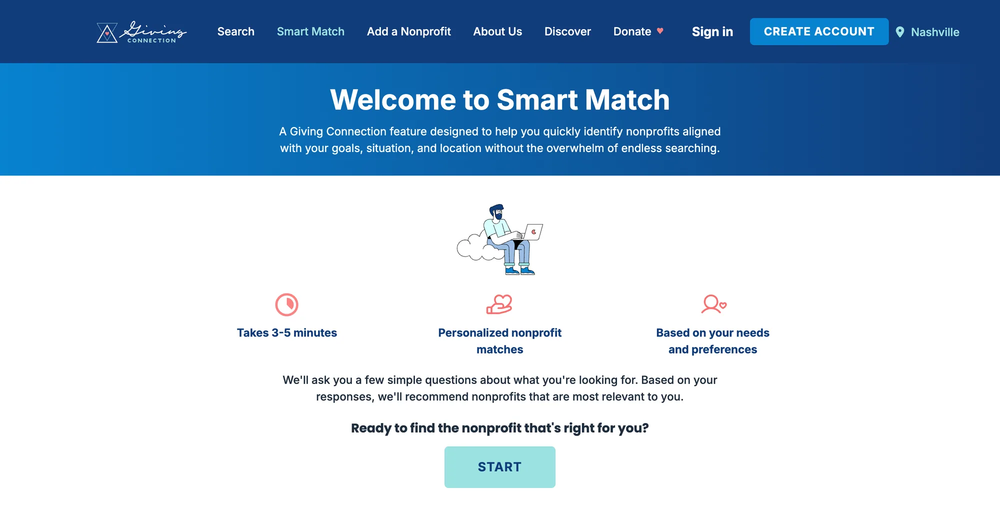
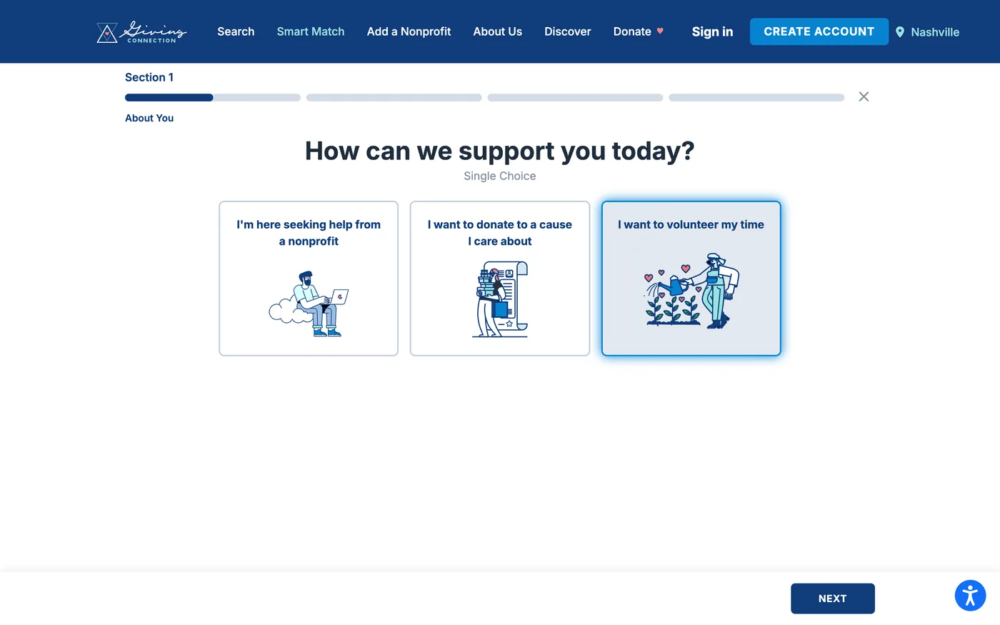
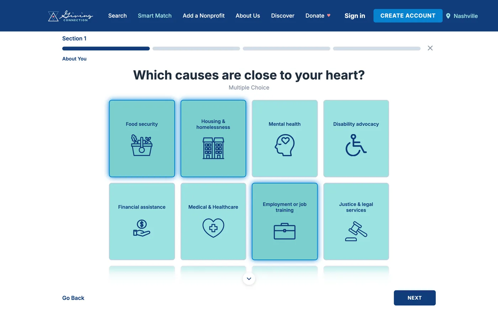
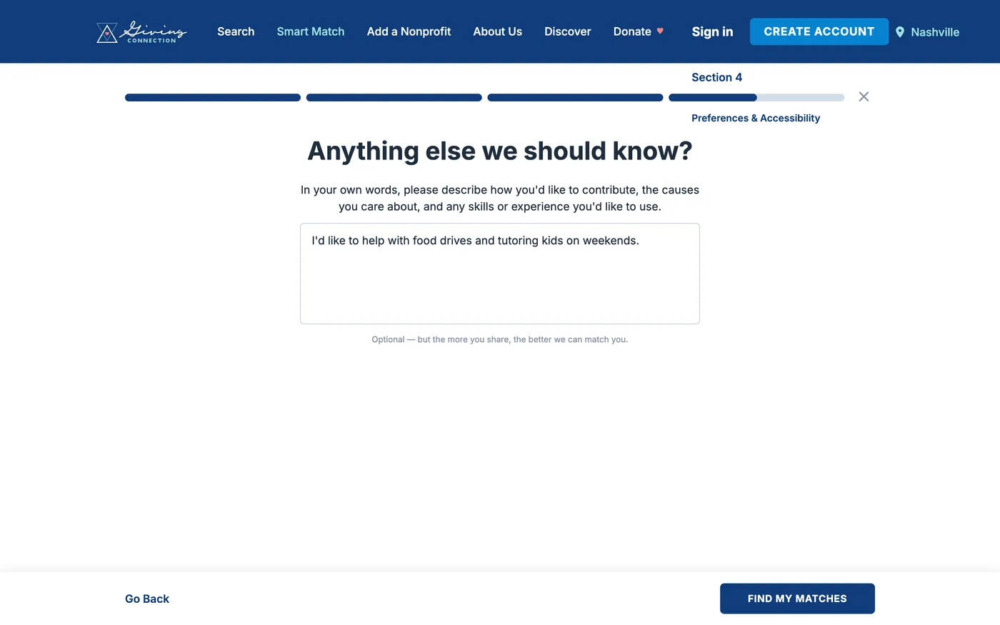

Giving Connection · 2025
Smart Match: helping people find the right nonprofit, faster.
A hybrid recommender I designed, built, and shipped to production. It turns a short quiz into ranked, explainable nonprofit matches, and it cut Time-to-Success by 80% for 15,500+ users.

- 80%cut in Time-to-Success
- 15,500+users in production
- 928nonprofits embedded for retrieval
- 26config-driven attribute rules in re-ranking
The problem
Finding the right nonprofit is confusing. People face long lists, unclear categories, and inconsistent descriptions, and many give up before they reach the help they need.
Nonprofits have the opposite problem: poor discovery, low visibility, and mismatched search terms keep them from reaching the right people.
The opportunity
Replace keyword search with matching. A short branching quiz helps people say what they need, and their answers become semantic vectors, so recommendations get more personal and much less overwhelming.
My role
Product strategy
Scoped the user journey, defined matching requirements, and shaped the branching quiz that feeds the engine.
ML systems
Researched models, wrote the embedding and matching code, and validated outputs with real nonprofit data.
Front end
Designed and coded the quiz experience, prototyped it, and iterated on clarity and match relevance.
How it works
- Data. I wrote the Python embedding ETL over 928 nonprofits, with regex section extraction and batched inference.
- Integration. I built a Ruby/Python bridge into Rails 7.2, with synonym query expansion and a PostGIS fallback.
- Trust. Every match comes with its reasons, and feedback capture means the next iteration starts from evidence.
In production



What I learned
Design clarity shapes user confidence.
Clearer questions, guided flows, and simple visual cues didn't just improve usability. They made people feel more certain and supported in stressful moments.
The model only works when the system works.
A matching engine isn't defined by its embeddings alone. Impact came from aligning the quiz, the ranking logic, the UI, and people's expectations into one flow.
Next project